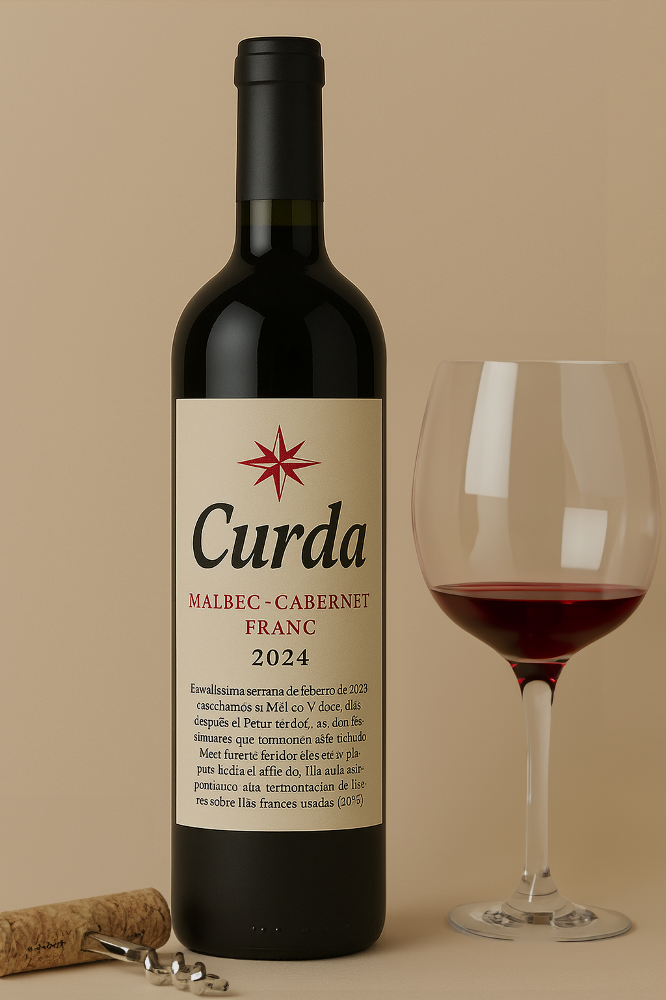

Vino elaborado en Finca Las Antípodas. Este ensamblaje de Malbec y Cabernet Franc ofrece un perfil aromático intenso y elegante, donde la fruta madura se equilibra con notas herbales y especiadas. Es un vino expresivo, ya que equilibrio y complejidad reflejan el terroir único de la región.
Características
- Cata: De color rojo rubí con reflejos violáceos, presenta aromas a ciruelas, pimientos asados y especias suaves. En boca es jugoso, con taninos redondos, buena acidez y un final largo y persistente.
- Cepa: Malbec & Cabernet Franc.
- Año: 2024.
- Región geográfica: Pampa Húmeda.
- Graduación Alcohólica: 13,5°.
Acompañamiento ideal recomendado
Pastas rellenas, carnes al horno, estofados y quesos semiduros. También armoniza bien con platos a base de hongos o vegetales asados.
Consultar / Comprar